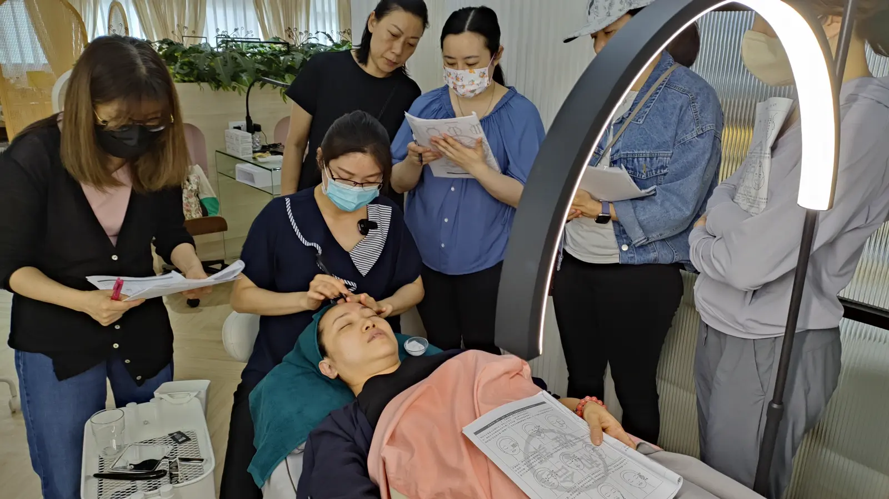

The Bojin Journal · The method
Which Hand Should Hold the Tool? Dominant vs. Non-Dominant

A right-handed student once asked me, with real frustration, why her left-side strokes always felt worse than her right. She'd assumed the problem was skill, that her dominant hand was simply better at the technique and she needed more practice on the other side to catch up. The actual answer had nothing to do with skill. She was using her right hand to reach all the way across her face to work her left cheek, twisting her wrist into an angle that made every stroke harder than it needed to be.
So here's the idea before the detail: your dominant hand is not automatically the right hand for every area of your face. It gives you more natural control, which matters for precise work. But which side of your face you're working often matters more, because reaching across your face with the "wrong" hand for that side can force an awkward wrist angle no amount of dominant-hand skill fixes.
What your dominant hand is genuinely good for
More natural fine control, especially with the rounded tip on a small, precise spot. If you're right-handed, your right hand will likely find the angle and pressure for delicate work a little more instinctively than your left. This is real, and it's worth using your dominant hand for the areas where that precision matters most, typically the side of your face that hand can reach without twisting.
Where handedness stops being the deciding factor
Try reaching your dominant hand all the way across your face to work the far cheek, and you'll likely feel it immediately: your wrist bends at an angle that makes the working angle harder to control, not easier, no matter how skilled that hand normally is. This is simple geometry, not a skill problem. For the side of your face that's a natural reach for your non-dominant hand, switching hands often produces a smoother, more comfortable stroke than forcing your dominant hand across.
Think of it as two separate questions: which hand is more skilled, and which hand can reach this spot without contorting your wrist. Your dominant hand usually wins the first question. The side of your face you're working usually decides the second. When they conflict, the wrist angle should win, because a strained wrist undermines the very control your dominant hand was supposed to provide.
Why the non-dominant hand isn't as hard as it sounds
Bojin strokes don't ask for the kind of fine motor precision that handwriting or threading a needle does. Most of the movements are broader glides and gentle holds, which your non-dominant hand can manage with far less practice than you'd expect. It will feel clumsy for the first few sessions, the way anything unfamiliar does, and then it stops being something you think about at all.
A simple way to decide, side by side
Try both hands on both sides of your face for a single stroke each, and pay attention to your wrist rather than which hand felt more "natural" out of habit. If one hand lets your wrist stay relatively straight while the tool follows the angle of your jaw or cheek, and the other twists your wrist to compensate, that's your answer for that side. Most people find their dominant hand suits one side of their face and their non-dominant hand suits the other, simply because of how the reach lines up.
Building comfort with either hand
Even if you don't need to switch yet, practicing a few strokes with your non-dominant hand on areas your dominant hand already handles well is worth the awkwardness. It means you're never stuck forcing an uncomfortable reach just to stay with the hand that feels familiar, and it gives you a fallback if one arm is ever tired, sore, or occupied holding a phone to a video call.
An honest note
Which hand you use won't change what the method itself can do for either side of your face. What it changes is how comfortable and controlled each stroke feels, which matters more than it sounds like it should, since a strained wrist quietly undermines pressure and angle even when you're not thinking about it. The effect stays gentle and temporary either way; comfortable hands just get you there with less friction.
Next session, try the far side of your face with your other hand before you assume it's the wrong choice. Your wrist will tell you faster than your habits will.
Quick answers
Should I always use my dominant hand to hold the tool?
Not always. Your dominant hand gives you more natural control, which matters most for precise work like the rounded tip. But which side of your face you're working often makes the opposite hand the more comfortable, natural choice for the angle involved.
Why does hand choice change from side to side?
Reaching across your face to work the far side with your usual hand often twists your wrist into an awkward angle. Switching hands for that side lets your wrist stay in a more natural position, which usually matters more than which hand you write with.
Is it hard to use my non-dominant hand?
It feels clumsy at first, the way most non-dominant tasks do, but bojin strokes don't demand fine motor precision the way handwriting does. Most women find their non-dominant hand becomes comfortable within a few sessions, especially for the broader, less precise passes.
Should I practice using both hands even if I don't need to yet?
It's worth it. Being comfortable with either hand means you're never fighting an awkward wrist angle just to stay with your usual hand, and it gives you a backup if one hand or arm is ever tired, sore, or otherwise not available.
See both hands in action
Watching the hand switch happen naturally makes far more sense than reading about wrist angles. My free 3-minute video shows both sides of a face worked with the hand that actually fits each one.
Watch the free 3-min videoYu-Ting Lan is a Taiwan-based international bojin instructor and the founder of Héhé Studio. She has taught her bojin method to more than a thousand students, from complete beginners to grandmothers, across Taiwan, Hong Kong, and Malaysia.